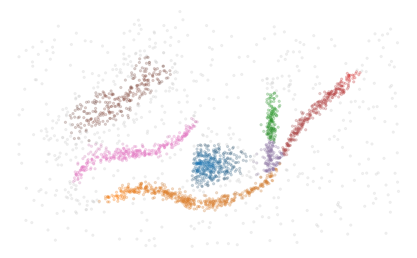

FLASC
Flare-Sensitive Clustering (FLASC) adds an efficient post-processing step to the HDBSCAN* clustering algorithm to detect branching structures within clusters.
The flasc package is closely based on the hdbscan package
and supports the same API, except sparse inputs, which are not supported yet.
from flasc import FLASC
import numpy as np
import seaborn as sns
import matplotlib.pyplot as plt
data = np.load('./notebooks/data/flared_clusterable_data.npy')
clusterer = FLASC(min_cluster_size=15)
clusterer.fit(data)
colors = sns.color_palette('tab10', 23)
point_colors = [
sns.desaturate(colors[l], p)
for l, p in zip(clusterer.labels_, clusterer.probabilities_)
]
plt.scatter(data[:, 0], data[:, 1], 2, point_colors, alpha=0.5)
plt.axis('off')
plt.show()
